<!DOCTYPE html>
<html lang="en">
  <head>
    <meta charset="utf-8" />
    <meta name="viewport" content="width=device-width, initial-scale=1.0, maximum-scale=1.0, user-scalable=no" />

    <title></title>
    <link rel="stylesheet" href="dist/reveal.css" />
    <link rel="stylesheet" href="dist/theme/serif.css" id="theme" />
    <link rel="stylesheet" href="plugin/highlight/monokai.css" />
	<link rel="stylesheet" href="css/layout.css" />
	<link rel="stylesheet" href="plugin/customcontrols/style.css">
	<link rel="stylesheet" href="plugin/chalkboard/style.css">

	<link rel="stylesheet" href="plugin/reveal-pointer/pointer.css" />


    <script defer src="dist/fontawesome/all.min.js"></script>

	<script type="text/javascript">
		var forgetPop = true;
		function onPopState(event) {
			if(forgetPop){
				forgetPop = false;
			} else {
				parent.postMessage(event.target.location.href, "app://obsidian.md");
			}
        }
		window.onpopstate = onPopState;
		window.onmessage = event => {
			if(event.data == "reload"){
				window.document.location.reload();
			}
			forgetPop = true;
		}

		function fitElements(){
			const itemsToFit = document.getElementsByClassName('fitText');
			for (const item in itemsToFit) {
				if (Object.hasOwnProperty.call(itemsToFit, item)) {
					var element = itemsToFit[item];
					fitElement(element,1, 1000);
					element.classList.remove('fitText');
				}
			}
		}

		function fitElement(element, start, end){

			let size = (end + start) / 2;
			element.style.fontSize = `${size}px`;

			if(Math.abs(start - end) < 1){
				while(element.scrollHeight > element.offsetHeight){
					size--;
					element.style.fontSize = `${size}px`;
				}
				return;
			}

			if(element.scrollHeight > element.offsetHeight){
				fitElement(element, start, size);
			} else {
				fitElement(element, size, end);
			}		
		}


		document.onreadystatechange = () => {
			fitElements();
			if (document.readyState === 'complete') {
				if (window.location.href.indexOf("?export") != -1){
					parent.postMessage(event.target.location.href, "app://obsidian.md");
				}
				if (window.location.href.indexOf("print-pdf") != -1){
					let stateCheck = setInterval(() => {
						clearInterval(stateCheck);
						window.print();
					}, 250);
				}
			}
	};


        </script>
  </head>
  <body>
    <div class="reveal">
      <div class="slides"><section ><section data-markdown><script type="text/template"><!-- .slide: class="has-light-background drop" data-background-color="#e5f3e0" -->
<div class="" style="position: absolute; left: 0px; top: 0px; height: 800px; width: 1600px; min-height: 800px; display: flex; flex-direction: column; align-items: center; justify-content: center" absolute="true">

## AI for Developers: Adoption via Engineering Practices


From the authors of the course ["LLMs for Developers: Usage and Integration Practices"]([https://lms.eleks.com/course/view.php?id=427")
</div></script></section><section data-markdown><script type="text/template"><!-- .slide: class="drop" -->
<div class="" style="position: absolute; left: 0px; top: 0px; height: 800px; width: 1600px; min-height: 800px; display: flex; flex-direction: column; align-items: center; justify-content: center" absolute="true">

## Workshop Mentors

<split gap="3">

<div class="block">


Arsen Slyusarchuk
</div>


<div class="block">


Volodymyr Shevchuk
</div>


</split>
</div></script></section><section data-markdown><script type="text/template"><!-- .slide: class="drop" -->
<div class="" style="position: absolute; left: 0px; top: 0px; height: 800px; width: 1600px; min-height: 800px; display: flex; flex-direction: column; align-items: center; justify-content: center" absolute="true">

## Why was this course created?

To support a smoother transition from a traditional SDLC to an AI-native SDLC process across the company
</div></script></section><section data-markdown><script type="text/template"><!-- .slide: class="drop" -->
<div class="" style="position: absolute; left: 0px; top: 0px; height: 800px; width: 1600px; min-height: 800px; display: flex; flex-direction: column; align-items: center; justify-content: center" absolute="true">

## Workshop Overview

1. Course intro
2. Master your IDE
3. Teach your agent
4. Orchestrated Automation
5. AI usage optimization
</div></script></section></section><section  data-markdown><script type="text/template"><!-- .slide: class="has-light-background drop" data-background-color="#e5f3e0" -->
<div class="" style="position: absolute; left: 0px; top: 0px; height: 800px; width: 1600px; min-height: 800px; display: flex; flex-direction: column; align-items: center; justify-content: center" absolute="true">

## Module #1: Course Intro

**Agenda**

- Workshop idea and outcomes
- Prerequisites
- AI adoption at ELEKS
- Engineering practices
- Q&A session
- Useful Links
</div></script></section><section ><section data-markdown><script type="text/template"><!-- .slide: class="has-light-background drop" data-background-color="#e5f3e0" -->
<div class="" style="position: absolute; left: 0px; top: 0px; height: 800px; width: 1600px; min-height: 800px; display: flex; flex-direction: column; align-items: center; justify-content: center" absolute="true">

## Workshop Idea And Outcomes

> Stop one-off prompts - **make AI part of your everyday development workflow**
>
> <!-- .element: class="fragment" data-fragment-index="1" -->
</div></script></section><section data-markdown><script type="text/template"><!-- .slide: class="drop" -->
<div class="" style="position: absolute; left: 0px; top: 0px; height: 800px; width: 1600px; min-height: 800px; display: flex; flex-direction: column; align-items: center; justify-content: center" absolute="true">

### After this course you will be able to

- **Integrate AI into daily work** - code, review, tests, docs, refactors you do every day
- **Align AI with Engineering Practices** - know _what_ the process requires before
  automating it
- **Use AI integration tools where they add value** - Rules, Skills, MCP, Agents, and
  Hooks, where appropriate

notes:

The point of the workshop: teach people to weave AI into everyday work, not to catalog tools.
The foundation is engineering practices (what we do and why) + integration best practices (how to
connect AI to that). Rules/Skills/MCP/Agents/Hooks
</div></script></section><section data-markdown><script type="text/template"><!-- .slide: class="drop" -->
<div class="" style="position: absolute; left: 0px; top: 0px; height: 800px; width: 1600px; min-height: 800px; display: flex; flex-direction: column; align-items: center; justify-content: center" absolute="true">

## We will teach you to cook AI


</div></script></section></section><section  data-markdown><script type="text/template"><!-- .slide: class="has-light-background drop" data-background-color="#e5f3e0" -->
<div class="" style="position: absolute; left: 0px; top: 0px; height: 800px; width: 1600px; min-height: 800px; display: flex; flex-direction: column; align-items: center; justify-content: center" absolute="true">

## Prerequisites

- Installed [Git](https://git-scm.com/)
- [GitHub](https://github.com) account for practical tasks
- Installed [Nodejs](https://nodejs.org) >= v.22 and NPM
- Installed [Cursor](https://cursor.com/download) version >= v3.6
- Good mood and open mind
</div></script></section><section  data-markdown><script type="text/template"><!-- .slide: class="has-light-background drop" data-background-color="#e5f3e0" -->
<div class="" style="position: absolute; left: 0px; top: 0px; height: 800px; width: 1600px; min-height: 800px; display: flex; flex-direction: column; align-items: center; justify-content: center" absolute="true">

## Our Principles for AI Interaction


- **AI does not replace the process** - it removes routine work within it
- The **developer** is always **responsible** for the final result.
- AI-generated code **must meet** the same engineering **standards** as human-written
  code.
- The goal of AI adoption **is not to write more code**, but to **deliver better results**
  in less time
</div></script></section><section ><section data-markdown><script type="text/template"><!-- .slide: class="has-light-background drop" data-background-color="#e5f3e0" -->
<div class="" style="position: absolute; left: 0px; top: 0px; height: 800px; width: 1600px; min-height: 800px; display: flex; flex-direction: column; align-items: center; justify-content: center" absolute="true">

## AI adoption at ELEKS

https://elekscloud.sharepoint.com/sites/GenAI

GenAI portal:

- How to Request a Licence for an AI Tool
- AI Usage Policy
- List of allowed/prohibited MCP Connectors
- AI Guild
</div></script></section><section data-markdown><script type="text/template"><!-- .slide: class="drop" -->
<div class="" style="position: absolute; left: 0px; top: 0px; height: 800px; width: 1600px; min-height: 800px; display: flex; flex-direction: column; align-items: center; justify-content: center" absolute="true">

### How to Request a Licence for an AI Tool

https://elekscloud.sharepoint.com/sites/GenAI/SitePages/How-to-Request-a-Licence-to-AI-Tool.aspx

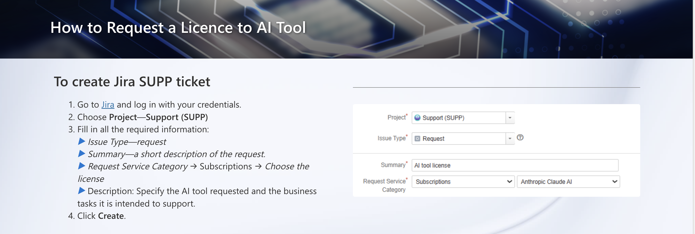
</div></script></section><section data-markdown><script type="text/template"><!-- .slide: class="drop" -->
<div class="" style="position: absolute; left: 0px; top: 0px; height: 800px; width: 1600px; min-height: 800px; display: flex; flex-direction: column; align-items: center; justify-content: center" absolute="true">

### Request Cursor

**Do it now** - request a Cursor licence before Module 2


</div></script></section><section data-markdown><script type="text/template"><!-- .slide: class="drop" -->
<div class="" style="position: absolute; left: 0px; top: 0px; height: 800px; width: 1600px; min-height: 800px; display: flex; flex-direction: column; align-items: center; justify-content: center" absolute="true">

### AI Usage Policy

https://elekscloud.sharepoint.com/sites/GenAI/SitePages/Eleks-GenAI-Tools.aspx

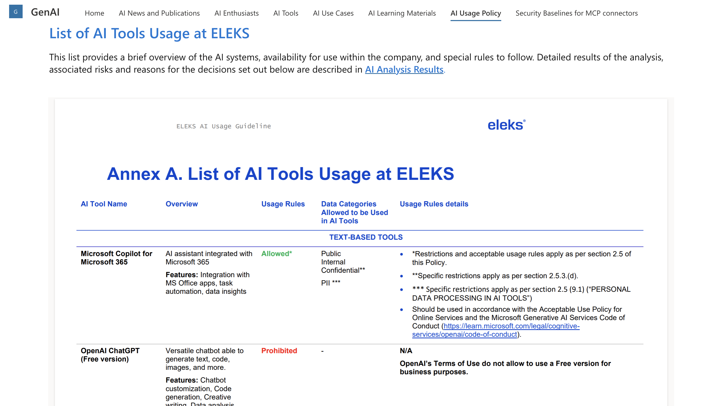
</div></script></section><section data-markdown><script type="text/template"><!-- .slide: class="drop" -->
<div class="" style="position: absolute; left: 0px; top: 0px; height: 800px; width: 1600px; min-height: 800px; display: flex; flex-direction: column; align-items: center; justify-content: center" absolute="true">

### List of allowed/prohibited MCP Connectors

https://elekscloud.sharepoint.com/sites/GenAI/SitePages/Security-Baselines-for-MCP.aspx

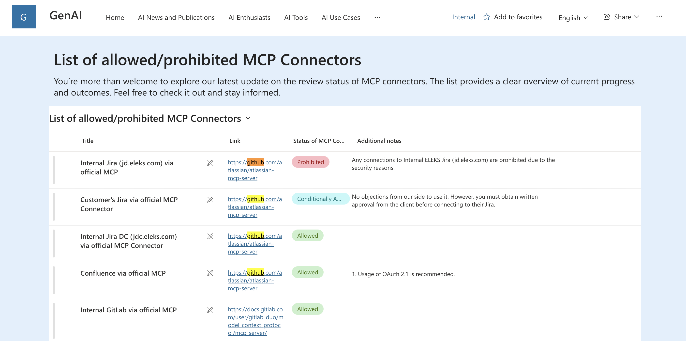
</div></script></section><section data-markdown><script type="text/template"><!-- .slide: class="drop" -->
<div class="" style="position: absolute; left: 0px; top: 0px; height: 800px; width: 1600px; min-height: 800px; display: flex; flex-direction: column; align-items: center; justify-content: center" absolute="true">

### AI Guild

https://elekscloud.sharepoint.com/sites/GenAI/SitePages/🤖-AI-Guild.aspx

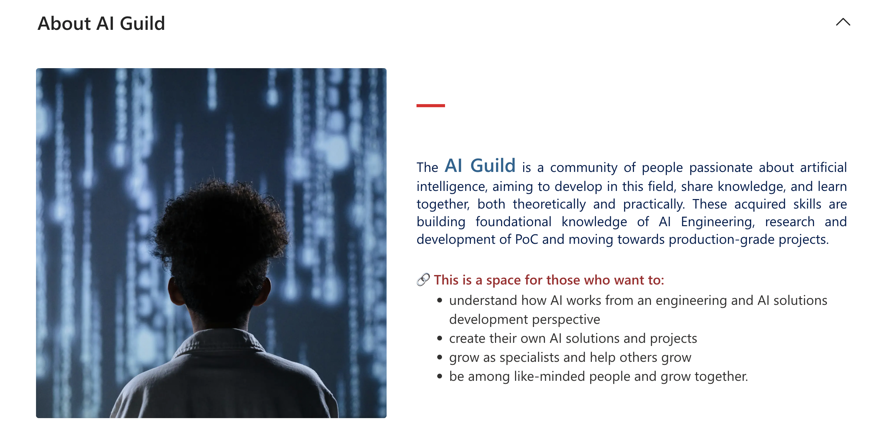
</div></script></section><section data-markdown><script type="text/template"><!-- .slide: class="drop" -->
<div class="" style="position: absolute; left: 0px; top: 0px; height: 800px; width: 1600px; min-height: 800px; display: flex; flex-direction: column; align-items: center; justify-content: center" absolute="true">

### AI Stream Competency Manager


</div></script></section></section><section ><section data-markdown><script type="text/template"><!-- .slide: class="has-light-background drop" data-background-color="#e5f3e0" -->
<div class="" style="position: absolute; left: 0px; top: 0px; height: 800px; width: 1600px; min-height: 800px; display: flex; flex-direction: column; align-items: center; justify-content: center" absolute="true">

## Manhattan Project

https://elekscloud.sharepoint.com/sites/GenAI/SitePages/AI-SDLC-Project.aspx

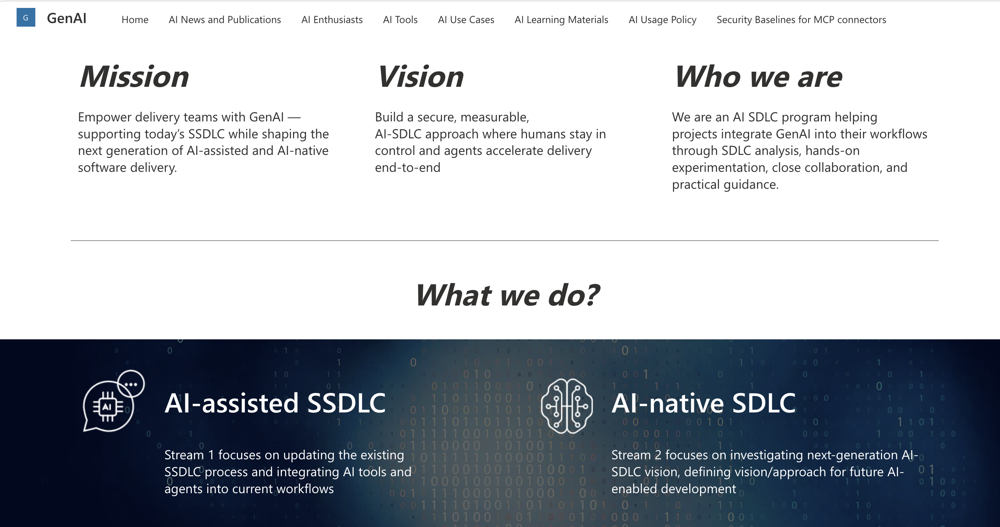


notes:

Mission: Empower delivery teams with GenAI — supporting today’s SSDLC while shaping the
next generation of AI-assisted and AI-native software delivery

Vision: Build a secure, measurable, AI‑SDLC approach where humans stay in control and
agents accelerate delivery end‑to‑end

Who we are: We are an AI SDLC program helping projects integrate GenAI into their
workflows through SDLC analysis, hands-on experimentation, close collaboration, and
practical guidance

What we do?

- **AI-assisted SSDLC**: Stream 1 focuses on updating the existing SSDLC process and
  integrating AI tools and agents into current workflows
- **AI-native SDLC**: Stream 2 focuses on investigating next-generation AI-SDLC vision,
  defining vision/approach for future AI-enabled development
</div></script></section><section data-markdown><script type="text/template"><!-- .slide: class="drop" -->
<div class="" style="position: absolute; left: 0px; top: 0px; height: 800px; width: 1600px; min-height: 800px; display: flex; flex-direction: column; align-items: center; justify-content: center" absolute="true">

## Manhattan Team

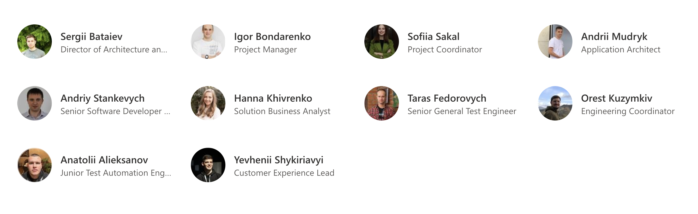
</div></script></section><section data-markdown><script type="text/template"><!-- .slide: class="drop" -->
<div class="" style="position: absolute; left: 0px; top: 0px; height: 800px; width: 1600px; min-height: 800px; display: flex; flex-direction: column; align-items: center; justify-content: center" absolute="true">

<style>
.container {
  width: 100%; 
  display: flex; 
  flex-direction: column;
  justify-content: space-between;
padding: 0 10px;
}

.container-header {
 display: flex;
  width: 100%;
  justify-content: center;
  align-items: center;
}

.container-body {
  width: 100%;
  flex-direction: row;
  display: flex;
  flex: 1 1 auto;
	padding: 0 20px;
}

.container-body-left {
  width: 50%;
  height: 100%;
  flex: 1;
  display: flex;
  align-items: center;
  justify-content: center;
}

.container-body-right {
  width: 50%;
  height: 100%;
  flex: 1;
  display: flex;
  align-items: center;
  justify-content: center;
}
</style>

<div class="container">
<div class="container-header">
<div class="block">

## SDLC process

</div>


</div>
<div class="container-body">
<div class="container-body-left">
<div class="block">

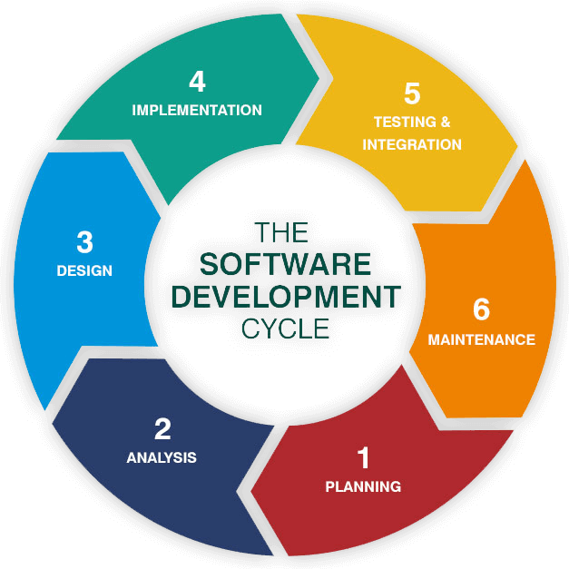


</div>


</div>
<div class="container-body-right">
<div class="block">

1. Planning
2. Analysis (Requirements)
3. Design
4. Implementation (Coding)
5. Testing & Integration
6. Maintenance

</div>


</div>
</div>


</div>
</div></script></section><section data-markdown><script type="text/template"><!-- .slide: class="drop" -->
<div class="" style="position: absolute; left: 0px; top: 0px; height: 800px; width: 1600px; min-height: 800px; display: flex; flex-direction: column; align-items: center; justify-content: center" absolute="true">

## AI-boosted SDLC\*

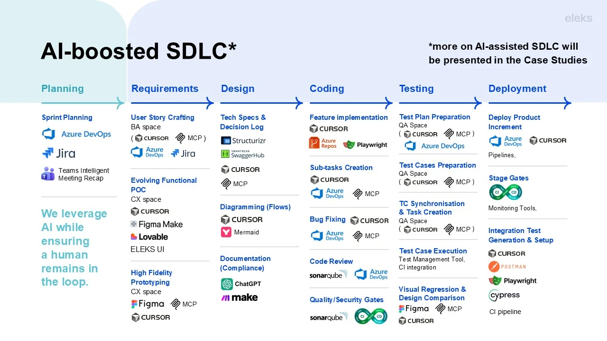
</div></script></section><section data-markdown><script type="text/template"><!-- .slide: class="drop" -->
<div class="" style="position: absolute; left: 0px; top: 0px; height: 800px; width: 1600px; min-height: 800px; display: flex; flex-direction: column; align-items: center; justify-content: center" absolute="true">

## AI SDLC Maturity Assessment

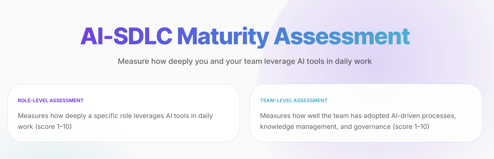
</div></script></section><section data-markdown><script type="text/template"><!-- .slide: class="drop" -->
<div class="" style="position: absolute; left: 0px; top: 0px; height: 800px; width: 1600px; min-height: 800px; display: flex; flex-direction: column; align-items: center; justify-content: center" absolute="true">

## Time to practice

Take the quiz using the "role-level assessment" option


https://quiz.aisdlc.cc/
</div></script></section><section data-markdown><script type="text/template"><!-- .slide: class="drop" -->
<div class="" style="position: absolute; left: 0px; top: 0px; height: 800px; width: 1600px; min-height: 800px; display: flex; flex-direction: column; align-items: center; justify-content: center" absolute="true">

## AI Adoption Levels

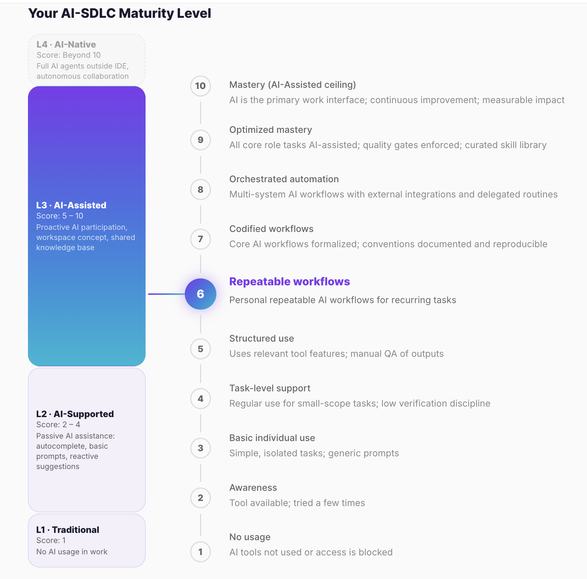
</div></script></section></section><section ><section data-markdown><script type="text/template"><!-- .slide: class="has-light-background drop" data-background-color="#e5f3e0" -->
<div class="" style="position: absolute; left: 0px; top: 0px; height: 800px; width: 1600px; min-height: 800px; display: flex; flex-direction: column; align-items: center; justify-content: center" absolute="true">

## Focus on "Role-level Assessment"

| AI-SDLC Level          | Role-Level Score Range | Description                                                   |
| ---------------------- | ---------------------- | ------------------------------------------------------------- |
| Level 1 — Traditional  | 1                      | No AI usage                                                   |
| Level 2 — AI-Supported | 2–4                    | Passive AI assistance (autocomplete, basic prompts)           |
| Level 3 — AI-Assisted  | 5–10                   | Proactive AI participation, workspace concept, knowledge base |
| Level 4 — AI-Native    | > 10 (beyond scale)    | Full AI agents outside IDE, autonomous collaboration          |

<!-- .element: style="font-size: 1.8rem" -->

notes:

This course is more about AI adoption from a developer's point of view
</div></script></section><section data-markdown><script type="text/template"><!-- .slide: class="drop" -->
<div class="" style="position: absolute; left: 0px; top: 0px; height: 800px; width: 1600px; min-height: 800px; display: flex; flex-direction: column; align-items: center; justify-content: center" absolute="true">

## Developer Level 1-5

| Score | What it looks like                                                                                       |
| :---: | -------------------------------------------------------------------------------------------------------- |
|   1   | Pure manual coding; IDE used only for syntax highlighting and basic auto-suggestions                     |
|   2   | Copilot/Cursor autocomplete enabled but mostly ignored or accepted without thought                       |
|   3   | Uses AI chat for quick questions, snippets, API lookup; single-file scope                                |
|   4   | Regular inline completions; uses AI for boilerplate, simple functions; limited code review of AI output  |
|   5   | Multi-file context; uses codebase-aware features; reviews and edits AI-generated code; debugging with AI |
</div></script></section><section data-markdown><script type="text/template"><!-- .slide: class="drop" -->
<div class="" style="position: absolute; left: 0px; top: 0px; height: 800px; width: 1600px; min-height: 800px; display: flex; flex-direction: column; align-items: center; justify-content: center" absolute="true">

## Developer Level 6-10

| Score | What it looks like                                                                                                                                                    |
| :---: | --------------------------------------------------------------------------------------------------------------------------------------------------------------------- |
|   6   | Repeatable workflows: refactoring, test generation, PR descriptions, commit messages; personal prompt templates                                                       |
|   7   | Project rules (code style, architecture patterns, error handling); skills for common tasks; documented and reproducible practices                                     |
|   8   | Subagents for complex flows (feature scaffolding, migration scripts, multi-service changes); MCP integrations (Git, CI/CD, DB); plugins                               |
|   9   | Full workspace: all routine dev tasks AI-assisted; curated skill library; quality gates (AI code must pass same review as human code); traceability                   |
|  10   | AI workspace is the primary development interface; pair-programs with AI on complex tasks; continuously refines skills and workflows; measurable velocity improvement |
</div></script></section></section><section ><section data-markdown><script type="text/template"><!-- .slide: class="has-light-background drop" data-background-color="#e5f3e0" -->
<div class="" style="position: absolute; left: 0px; top: 0px; height: 800px; width: 1600px; min-height: 800px; display: flex; flex-direction: column; align-items: center; justify-content: center" absolute="true">

## What do we want to integrate with AI?

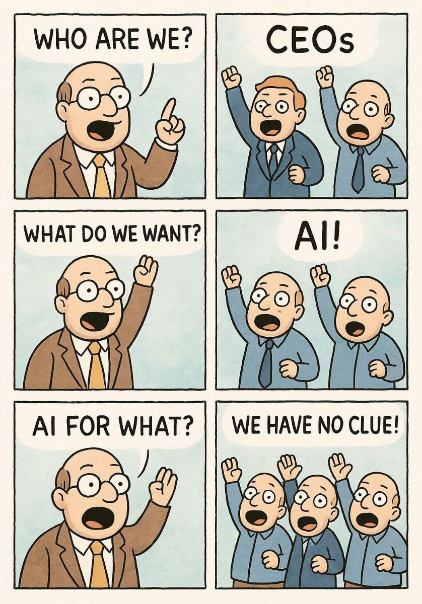
</div></script></section><section data-markdown><script type="text/template"><!-- .slide: class="drop" -->
<div class="" style="position: absolute; left: 0px; top: 0px; height: 800px; width: 1600px; min-height: 800px; display: flex; flex-direction: column; align-items: center; justify-content: center" absolute="true">

<style>
.container {
  width: 100%; 
  display: flex; 
  flex-direction: column;
  justify-content: space-between;
padding: 0 10px;
}

.container-header {
 display: flex;
  width: 100%;
  justify-content: center;
  align-items: center;
}

.container-body {
  width: 100%;
  flex-direction: row;
  display: flex;
  flex: 1 1 auto;
	padding: 0 20px;
}

.container-body-left {
  width: 50%;
  height: 100%;
  flex: 1;
  display: flex;
  align-items: center;
  justify-content: center;
}

.container-body-right {
  width: 50%;
  height: 100%;
  flex: 1;
  display: flex;
  align-items: center;
  justify-content: center;
}
</style>

<div class="container">
<div class="container-header">
<div class="block">

## Complexity of the AI adoption process

</div>


</div>
<div class="container-body">
<div class="container-body-left">
<div class="block">


</div>


</div>
<div class="container-body-right">
<div class="block">

<!-- prettier-ignore -->
- &shy;<!-- .element: class="fragment" data-fragment-index="1" -->different technology stacks
- &shy;<!-- .element: class="fragment" data-fragment-index="2" -->different business domains
- &shy;<!-- .element: class="fragment" data-fragment-index="3" -->different levels of team maturity
- &shy;<!-- .element: class="fragment" data-fragment-index="4" -->...

</div>


</div>
</div>


</div>
</div></script></section><section data-markdown><script type="text/template"><!-- .slide: class="drop" -->
<div class="" style="position: absolute; left: 0px; top: 0px; height: 800px; width: 1600px; min-height: 800px; display: flex; flex-direction: column; align-items: center; justify-content: center" absolute="true">

## Complexity of the AI adoption process

<!-- prettier-ignore -->
- &shy;<!-- .element: class="fragment" data-fragment-index="1" -->Do we have a unified approach?
- &shy;<!-- .element: class="fragment" data-fragment-index="2" -->Is it possible to have a unified approach?
</div></script></section><section data-markdown><script type="text/template"><!-- .slide: class="drop" -->
<div class="" style="position: absolute; left: 0px; top: 0px; height: 800px; width: 1600px; min-height: 800px; display: flex; flex-direction: column; align-items: center; justify-content: center" absolute="true">

## Our answer - Engineering practices!
</div></script></section><section data-markdown><script type="text/template"><!-- .slide: class="drop" -->
<div class="" style="position: absolute; left: 0px; top: 0px; height: 800px; width: 1600px; min-height: 800px; display: flex; flex-direction: column; align-items: center; justify-content: center" absolute="true">

## What is engineering practice?

> A consistent set of rules, processes and tools that keep code predictable and
> maintainable
>
> <!-- .element: class="fragment" data-fragment-index="1" -->

<!-- prettier-ignore -->
<div class="block">

- Сode review
- Continuous Integration and Delivery (CI/CD)
- Security audit
- Version control system usage
- Testing process
- Incident management
- Vulnerability management
- ... </div>

 <!-- .element: class="fragment" data-fragment-index="2" -->
</div></script></section></section><section ><section data-markdown><script type="text/template"><!-- .slide: class="has-light-background drop" data-background-color="#e5f3e0" -->
<div class="" style="position: absolute; left: 0px; top: 0px; height: 800px; width: 1600px; min-height: 800px; display: flex; flex-direction: column; align-items: center; justify-content: center" absolute="true">

<style>
.container {
  width: 100%; 
  display: flex; 
  flex-direction: column;
  justify-content: space-between;
padding: 0 10px;
}

.container-header {
 display: flex;
  width: 100%;
  justify-content: center;
  align-items: center;
}

.container-body {
  width: 100%;
  flex-direction: row;
  display: flex;
  flex: 1 1 auto;
	padding: 0 20px;
}

.container-body-left {
  width: 50%;
  height: 100%;
  flex: 1;
  display: flex;
  align-items: center;
  justify-content: center;
}

.container-body-right {
  width: 50%;
  height: 100%;
  flex: 1;
  display: flex;
  align-items: center;
  justify-content: center;
}
</style>

<div class="container">
<div class="container-header">
<div class="block">

## What makes a project good?

</div>


</div>
<div class="container-body">
<div class="container-body-left">
<div class="block">


</div>


</div>
<div class="container-body-right">
<div class="block">

<!-- prettier-ignore -->
- &shy;<!-- .element: class="fragment" data-fragment-index="1" -->Well managed
- &shy;<!-- .element: class="fragment" data-fragment-index="2" -->Clear goals
- &shy;<!-- .element: class="fragment" data-fragment-index="3" -->Client is happy
- &shy;<!-- .element: class="fragment" data-fragment-index="4" -->Correctly works for users
- &shy;<!-- .element: class="fragment" data-fragment-index="5" -->Relevant
- &shy;<!-- .element: class="fragment" data-fragment-index="6" -->On budget
- &shy;<!-- .element: class="fragment" data-fragment-index="7" -->\.\.\.
</div>


</div>
</div>


<!-- .slide: class="has-light-background" data-background-color="#e5f3e0" -->


notes:

- good team
- loyal client
- no strict deadlines maybe...

</div>
</div></script></section><section data-markdown><script type="text/template"><!-- .slide: class="drop" -->
<div class="" style="position: absolute; left: 0px; top: 0px; height: 800px; width: 1600px; min-height: 800px; display: flex; flex-direction: column; align-items: center; justify-content: center" absolute="true">

## Project Quality Attributes

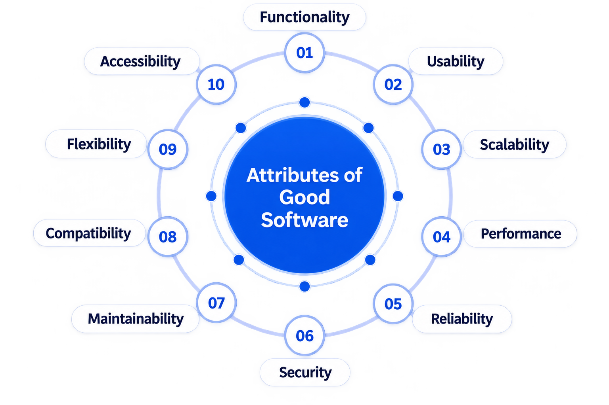


notes:

| Quality attribute   | What it means                                                                                        |
| ------------------- | ---------------------------------------------------------------------------------------------------- |
| **Usability**       | Users can understand and operate the system effectively with minimal friction.                       |
| **Availability**    | The system remains accessible and operational when users need it.                                    |
| **Portability**     | The software can run in different environments, platforms, or infrastructure with minimal changes.   |
| **Maintainability** | The code is easy to understand, modify, debug, and extend.                                           |
| **Testability**     | The software can be easily tested and its behavior verified automatically.                           |
| **Correctness**     | The software produces the expected results and implements the requirements correctly.                |
| **Readability**     | The code should be easy to read, understand, and reason about without unnecessary mental effort.     |
| **Reliability**     | The system works consistently and handles failures predictably.                                      |
| **Scalability**     | The system can handle increasing users, traffic, data, or workload without unacceptable degradation. |
</div></script></section><section data-markdown><script type="text/template"><!-- .slide: class="drop" -->
<div class="" style="position: absolute; left: 0px; top: 0px; height: 800px; width: 1600px; min-height: 800px; display: flex; flex-direction: column; align-items: center; justify-content: center" absolute="true">

## Quality Attributes and Engineering Practices

| Quality attribute   | Engineering practices that improve it                                                                                                             |
| ------------------- | ------------------------------------------------------------------------------------------------------------------------------------------------- |
| **Readability**     | Code Consistency, Code Complexity Control, Keep Solutions Simple (YAGNI), Separation of Responsibilities, Eliminate Unnecessary Duplication (DRY) |
| **Maintainability** | Continuous Refactoring, Technical Debt Management, Code Review, Living Documentation, Small, Focused Pull Requests, Version Control (Git)         |
| **Testability**     | Unit Testing, Dependency Isolation in Tests, Separation of Responsibilities, Code Complexity Control, Test Quality Gates                          |
| **Correctness**     | Unit Testing, End-to-End Testing, Test Quality Gates, Code Review, API Contract-First Design                                                      |
| **Reliability**     | Error Handling, Structured Logging, Observability, Incident Management, Continuous Integration                                                    |
| **Availability**    | Observability, Incident Management, Automated Build & Deployment, Feature Flags, Continuous Integration                                           |
| **Scalability**     | Performance Testing, Separation of Responsibilities, Infrastructure as Code, Observability, Configuration Management                              |
| **Portability**     | Infrastructure as Code, Configuration Management, Automated Build & Deployment, Database Migration Management                                     |
| **Usability**       | End-to-End Testing, Living Documentation, API Contract-First Design, Feature Flags                                                                |

<!-- .element: style="font-size: 1.5rem" -->

notes:

Practices are from the Module 1 engineering practices catalog
(`engineering-practices-full.md`).

One practice often supports several attributes — e.g. Code Review improves both
Correctness and Maintainability; Observability supports Reliability, Availability, and
Scalability.

The next slide narrows workshop focus to Readability and Maintainability. Full practice
details come later in the presentation.
</div></script></section><section data-markdown><script type="text/template"><!-- .slide: class="has-light-background drop" data-background-color="#e5f3e0" -->
<div class="" style="position: absolute; left: 0px; top: 0px; height: 800px; width: 1600px; min-height: 800px; display: flex; flex-direction: column; align-items: center; justify-content: center" absolute="true">

<style>
.container {
  width: 100%; 
  display: flex; 
  flex-direction: column;
  justify-content: space-between;
padding: 0 10px;
}

.container-header {
 display: flex;
  width: 100%;
  justify-content: center;
  align-items: center;
}

.container-body {
  width: 100%;
  flex-direction: row;
  display: flex;
  flex: 1 1 auto;
	padding: 0 20px;
}

.container-body-left {
  width: 50%;
  height: 100%;
  flex: 1;
  display: flex;
  align-items: center;
  justify-content: center;
}

.container-body-right {
  width: 50%;
  height: 100%;
  flex: 1;
  display: flex;
  align-items: center;
  justify-content: center;
}
</style>

<div class="container">
<div class="container-header">
<div class="block">

## Engineering practices list

</div>


</div>
<div class="container-body">
<div class="container-body-left">
<div class="block">

1. Change Tracking & Semantic Versioning
2. Feature Flags
3. Technical Debt Management
4. Living Documentation
5. API Contract-First Design
6. Security Auditing
7. Separation of Responsibilities
8. Keep Solutions Simple (YAGNI)
9. Code Complexity Control
10. Eliminate Unnecessary Duplication (DRY)
11. Duplication Elimination
12. Infrastructure as Code
13. Configuration Management
14. Database Migration Management
15. Code Consistency
16. Version Control Usage (Git)
17. Trunk-Based Development

</div>

<!-- .element: style="font-size: 1.8rem" -->

</div>
<div class="container-body-right">
<div class="block">

18. Atomic Commits
19. Small, Focused Pull Requests
20. Code Review
21. Continuous Refactoring
22. Error Handling
23. Structured Logging
24. Unit Testing
25. End-to-End Testing
26. Test Quality Gates
27. Dependency Isolation in Tests
28. Continuous Integration
29. Automated Build & Deployment
30. Dependency Vulnerability Management
31. Performance Testing
32. Observability
33. Incident Management

</div>

<!-- .element: style="font-size: 1.8rem" -->

</div>
</div>


</div>
</div></script></section><section data-markdown><script type="text/template"><!-- .slide: class="drop" -->
<div class="" style="position: absolute; left: 0px; top: 0px; height: 800px; width: 1600px; min-height: 800px; display: flex; flex-direction: column; align-items: center; justify-content: center" absolute="true">

## Project quality attributes

| Quality attribute   | What it means                                                                                    |
| ------------------- | ------------------------------------------------------------------------------------------------ |
| **Readability**     | The code should be easy to read, understand, and reason about without unnecessary mental effort. |
| **Maintainability** | The code is easy to understand, modify, debug, and extend.                                       |

notes:

To simplify our workshop, let's say what for us most impartant quality attributes are
"Readability" and "Maintainability". This thesis doesn't exclude the importance of other
quality attributes, but we will neglect them for now for the sake of simplicity of
presentation.
</div></script></section><section data-markdown><script type="text/template"><!-- .slide: class="drop" -->
<div class="" style="position: absolute; left: 0px; top: 0px; height: 800px; width: 1600px; min-height: 800px; display: flex; flex-direction: column; align-items: center; justify-content: center" absolute="true">

## Readability and Maintainability — Engineering Practices

| Quality attribute   | Engineering practices that improve it                                                                                                             |
| ------------------- | ------------------------------------------------------------------------------------------------------------------------------------------------- |
| **Readability**     | Code Consistency, Code Complexity Control, Keep Solutions Simple (YAGNI), Separation of Responsibilities, Eliminate Unnecessary Duplication (DRY) |
| **Maintainability** | Code Review, Living Documentation, Version Control (Git), Focused Pull Requests, Continuous Refactoring, Technical Debt Management                |
</div></script></section></section><section ><section data-markdown><script type="text/template"><!-- .slide: class="has-light-background drop" data-background-color="#e5f3e0" -->
<div class="" style="position: absolute; left: 0px; top: 0px; height: 800px; width: 1600px; min-height: 800px; display: flex; flex-direction: column; align-items: center; justify-content: center" absolute="true">

## Where do engineering practices live before AI?

- `Readme.md` and `Contribution.md` files
- `docs` folder
- in team leads' chamber of mind
- across competency levels of teammates
- ...
</div></script></section><section data-markdown><script type="text/template"><!-- .slide: class="drop" -->
<div class="" style="position: absolute; left: 0px; top: 0px; height: 800px; width: 1600px; min-height: 800px; display: flex; flex-direction: column; align-items: center; justify-content: center" absolute="true">

## Well-known Engineering Practices

<!-- prettier-ignore -->
<div class="block">

- Code Consistency
- Code Review
- Version Control (Git)
- ...

</div>

 <!-- .element: ="font-size: 2rem;" -->

notes:

- Trunk-Based Development
- Duplication Elimination
- Unit Testing
- End-to-End Testing
- Security Auditing
- Separation of Responsibilities
- Eliminate Unnecessary Duplication (DRY)
</div></script></section><section data-markdown><script type="text/template"><!-- .slide: class="drop" -->
<div class="" style="position: absolute; left: 0px; top: 0px; height: 800px; width: 1600px; min-height: 800px; display: flex; flex-direction: column; align-items: center; justify-content: center" absolute="true">

## Code Consistency

Same patterns across the codebase - regardless of who wrote the code.


</div></script></section><section data-markdown><script type="text/template"><!-- .slide: class="drop" -->
<div class="" style="position: absolute; left: 0px; top: 0px; height: 800px; width: 1600px; min-height: 800px; display: flex; flex-direction: column; align-items: center; justify-content: center" absolute="true">

### Code Consistency. Examples

- Shared ESLint + Prettier config in the repo
- EditorConfig for indentation and line endings
- Consistent folder and file structure across modules
</div></script></section><section data-markdown><script type="text/template"><!-- .slide: class="drop" -->
<div class="" style="position: absolute; left: 0px; top: 0px; height: 800px; width: 1600px; min-height: 800px; display: flex; flex-direction: column; align-items: center; justify-content: center" absolute="true">

### Code Consistency. Before AI integration

|                              |                                                                                                                   |
| ---------------------------- | ----------------------------------------------------------------------------------------------------------------- |
| **Style guide & examples**   | `CONTRIBUTING.md` — naming, folder layout, patterns to reuse; architecture docs with canonical examples per layer |
| **Linters & formatters**     | ESLint + Prettier + EditorConfig enforced repo-wide — same output regardless of author                            |
| **Pre-commit & CI gates**    | Hook runs lint/format locally; CI blocks merge on style or lint failure                                           |
| **Review for pattern match** | Checklist item: "matches existing project patterns"; SonarQube or architecture review periodically                |

notes:

Consistency — linters automate syntax; guide + review catch structural patterns linters
miss.
</div></script></section><section data-markdown><script type="text/template"><!-- .slide: class="drop" -->
<div class="" style="position: absolute; left: 0px; top: 0px; height: 800px; width: 1600px; min-height: 800px; display: flex; flex-direction: column; align-items: center; justify-content: center" absolute="true">

### Code Consistency. Possible integrations with AI

|               |                                                                                                           |
| ------------- | --------------------------------------------------------------------------------------------------------- |
| **Rules**     | `.cursor/rules/` encode naming, folder layout, and patterns — Agent follows them on every run             |
| **Skills**    | `code-consistency` skill scans the diff against existing modules; reusable slash command for quick check  |
| **Subagents** | Dedicated subagent compares new code to canonical examples in architecture docs before PR                 |
| **MCP**       | MCP server exposes project conventions or component docs — Agent reads live standards, not stale prompts  |
| **Hooks**     | Pre-commit or PR hook triggers consistency check — block or warn before merge                             |
| **Combined**  | Rule sets baseline → `@`-references add context → skill/subagent validates diff → hook enforces at commit |
</div></script></section><section data-markdown><script type="text/template"><!-- .slide: class="drop" -->
<div class="" style="position: absolute; left: 0px; top: 0px; height: 800px; width: 1600px; min-height: 800px; display: flex; flex-direction: column; align-items: center; justify-content: center" absolute="true">

## Code Review

Peer review every change before it reaches the trunk.


</div></script></section><section data-markdown><script type="text/template"><!-- .slide: class="drop" -->
<div class="" style="position: absolute; left: 0px; top: 0px; height: 800px; width: 1600px; min-height: 800px; display: flex; flex-direction: column; align-items: center; justify-content: center" absolute="true">

### Code Review. Examples

- Required approval from at least one teammate
- Review checklist in `CONTRIBUTING.md`
- Static analysis as automated first pass

notes:

Code review — the key human quality check.
</div></script></section><section data-markdown><script type="text/template"><!-- .slide: class="drop" -->
<div class="" style="position: absolute; left: 0px; top: 0px; height: 800px; width: 1600px; min-height: 800px; display: flex; flex-direction: column; align-items: center; justify-content: center" absolute="true">

### Code Review. Before AI integration

|                                                 |                                                                                           |
| ----------------------------------------------- | ----------------------------------------------------------------------------------------- |
| **Review checklist & DoD (Definition of Done)** | `CONTRIBUTING.md` + architecture docs - checklist; no merge without at least one approval |
| **Branch protection**                           | Required reviewers configured; author cannot self-merge                                   |
| **Review culture**                              | Constructive feedback, rotating reviewers; seniors mentor juniors on what to look for     |
| **Quality tracking**                            | Turnaround time and approval rate tracked; spot-check merged PRs in retrospectives        |

notes:

Code review - protection rules enforce; checklist + culture make review meaningful.
</div></script></section><section data-markdown><script type="text/template"><!-- .slide: class="drop" -->
<div class="" style="position: absolute; left: 0px; top: 0px; height: 800px; width: 1600px; min-height: 800px; display: flex; flex-direction: column; align-items: center; justify-content: center" absolute="true">

### Code Review. Possible integrations with AI

|               |                                                                                      |
| ------------- | ------------------------------------------------------------------------------------ |
| **Skills**    | Review skills run checklist against the diff - tests, docs, security, scope          |
| **Subagents** | `bugbot` and `security-review` subagents as automated first pass before human review |
| **Hooks**     | PR-open hook triggers review agent                                                   |

notes:

Code review — subagents + skills for an automated first pass; a human gives the final
approve.
</div></script></section><section data-markdown><script type="text/template"><!-- .slide: class="drop" -->
<div class="" style="position: absolute; left: 0px; top: 0px; height: 800px; width: 1600px; min-height: 800px; display: flex; flex-direction: column; align-items: center; justify-content: center" absolute="true">

## Version Control (Git)

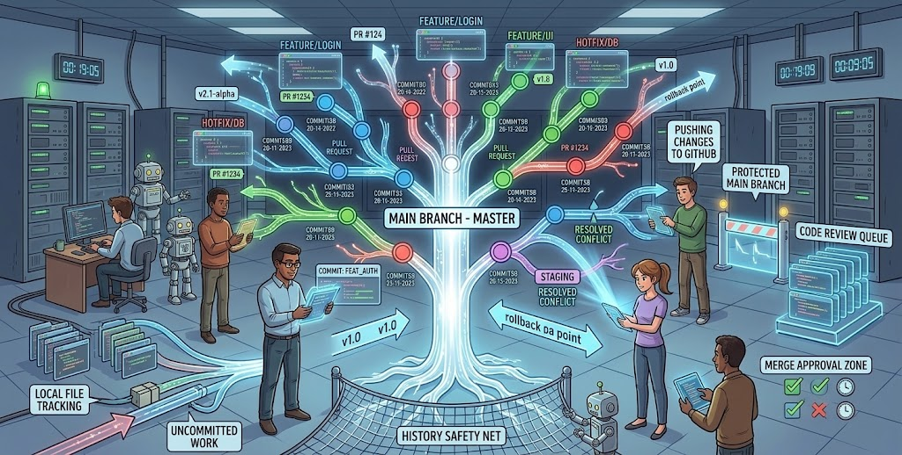
</div></script></section><section data-markdown><script type="text/template"><!-- .slide: class="drop" -->
<div class="" style="position: absolute; left: 0px; top: 0px; height: 800px; width: 1600px; min-height: 800px; display: flex; flex-direction: column; align-items: center; justify-content: center" absolute="true">

### Version Control (Git). Examples

- All source code lives in a Git repository
- Pull requests as the integration gate
- Tags and branches for releases and hotfixes
</div></script></section><section data-markdown><script type="text/template"><!-- .slide: class="drop" -->
<div class="" style="position: absolute; left: 0px; top: 0px; height: 800px; width: 1600px; min-height: 800px; display: flex; flex-direction: column; align-items: center; justify-content: center" absolute="true">

### Version Control (Git). Before AI integration

|                          |                                                                                                       |
| ------------------------ | ----------------------------------------------------------------------------------------------------- |
| **Git workflow in docs** | `CONTRIBUTING.md` - clone, branch, commit, open PR; release tagging and hotfix process in `README.md` |
| **Branch protection**    | No direct pushes to `main`; PR required; `.gitignore` and `.gitattributes` committed                  |
| **Daily git habits**     | Every developer branches, merges, resolves conflicts; seniors teach rebase during onboarding          |
| **Access & audit**       | Git history as audit trail; periodic review of repo permissions and admin access                      |

notes:

Git — branch protection + a documented workflow is the minimum for any team.
</div></script></section><section data-markdown><script type="text/template"><!-- .slide: class="drop" -->
<div class="" style="position: absolute; left: 0px; top: 0px; height: 800px; width: 1600px; min-height: 800px; display: flex; flex-direction: column; align-items: center; justify-content: center" absolute="true">

### Version Control (Git). Possible integrations with AI

|              |                                                                                        |
| ------------ | -------------------------------------------------------------------------------------- |
| **Rules**    | `AGENTS.md` or rules define git workflow - branch naming, PR-only merges to `main`     |
| **Skills**   | `create-branch`, `commit`, and `create-pr` skills enforce conventions at each git step |
| **Combined** | Rule sets workflow → skills apply it when branching, committing, and opening PRs       |

notes:

The Git practice holds best on rules + skills — hooks here are already the classic ones
(commitlint, branch protection).
</div></script></section><section data-markdown><script type="text/template"><!-- .slide: class="drop" -->
<div class="" style="position: absolute; left: 0px; top: 0px; height: 800px; width: 1600px; min-height: 800px; display: flex; flex-direction: column; align-items: center; justify-content: center" absolute="true">

## Connection between EP and SDLC

| Planning | Analysis | Design | Implementation                 | Testing & Integration | Maintenance             |
| -------- | -------- | ------ | ------------------------------ | --------------------- | ----------------------- |
| \-\-\-   | \-\-\-   | \-\-\- | Code Consistency               | Unit Testing          | Duplication Elimination |
|          |          |        | Duplication Elimination        | End-to-End Testing    | Code Consistency        |
|          |          |        | Trunk-Based Development        | Code Review           |                         |
|          |          |        | Separation of Responsibilities | Version Control       |                         |
|          |          |        |                                | Security Auditing     |                         |

<!-- .element: style="font-size: 1.8rem" -->
</div></script></section><section data-markdown><script type="text/template"><!-- .slide: class="drop" -->
<div class="" style="position: absolute; left: 0px; top: 0px; height: 800px; width: 1600px; min-height: 800px; display: flex; flex-direction: column; align-items: center; justify-content: center" absolute="true">

## Where can I find engineering practices?

In Matrix (in your stream matrix)<!-- .element: class="fragment" data-fragment-index="1" -->


</div></script></section></section><section  data-markdown><script type="text/template"><!-- .slide: class="has-light-background drop" data-background-color="#e5f3e0" -->
<div class="" style="position: absolute; left: 0px; top: 0px; height: 800px; width: 1600px; min-height: 800px; display: flex; flex-direction: column; align-items: center; justify-content: center" absolute="true">

## Q&A session


</div></script></section><section  data-markdown><script type="text/template"><!-- .slide: class="has-light-background drop" data-background-color="#e5f3e0" -->
<div class="" style="position: absolute; left: 0px; top: 0px; height: 800px; width: 1600px; min-height: 800px; display: flex; flex-direction: column; align-items: center; justify-content: center" absolute="true">

## Useful Links

- Course "LLMs for developers: usage and integration practices"

  - Link to the Moodle: https://lms.eleks.com/course/view.php?id=427
  - Video
    recordings: [Workshop Series LLM for Developers by Arsen Slyusarchuk and Volodymyr Shevchuk](https://elekscloud.sharepoint.com/sites/LDO/VideoLibrary/Forms/AllItems.aspx")
  - GitLab Repo with training examples: https://gitlab2.eleks.com/ai/education-plan
</div></script></section></div>
    </div>

    <script src="dist/reveal.js"></script>

    <script src="plugin/markdown/markdown.js"></script>
    <script src="plugin/highlight/highlight.js"></script>
    <script src="plugin/zoom/zoom.js"></script>
    <script src="plugin/notes/notes.js"></script>
    <script src="plugin/math/math.js"></script>
	<script src="plugin/mermaid/mermaid.js"></script>
	<script src="plugin/chart/chart.min.js"></script>
	<script src="plugin/chart/plugin.js"></script>
	<script src="plugin/menu/menu.js"></script>
	<script src="plugin/customcontrols/plugin.js"></script>
	<script src="plugin/chalkboard/plugin.js"></script>
	<script src="plugin/reveal-pointer/pointer.js"></script>
	<script src="plugin/elapsed-time-bar/elapsed-time-bar.js"></script>

    <script>
      function extend() {
        var target = {};
        for (var i = 0; i < arguments.length; i++) {
          var source = arguments[i];
          for (var key in source) {
            if (source.hasOwnProperty(key)) {
              target[key] = source[key];
            }
          }
        }
        return target;
      }

	  function isLight(color) {
		let hex = color.replace('#', '');

		// convert #fff => #ffffff
		if(hex.length == 3){
			hex = `${hex[0]}${hex[0]}${hex[1]}${hex[1]}${hex[2]}${hex[2]}`;
		}

		const c_r = parseInt(hex.substr(0, 2), 16);
		const c_g = parseInt(hex.substr(2, 2), 16);
		const c_b = parseInt(hex.substr(4, 2), 16);
		const brightness = ((c_r * 299) + (c_g * 587) + (c_b * 114)) / 1000;
		return brightness > 155;
	}

	var bgColor = getComputedStyle(document.documentElement).getPropertyValue('--r-background-color').trim();
	var isLight = isLight(bgColor);

	if(isLight){
		document.body.classList.add('has-light-background');
	} else {
		document.body.classList.add('has-dark-background');
	}

      // default options to init reveal.js
      var defaultOptions = {
        controls: true,
        progress: true,
        history: true,
        center: true,
        transition: 'default', // none/fade/slide/convex/concave/zoom
        plugins: [
          RevealMarkdown,
          RevealHighlight,
          RevealZoom,
          RevealNotes,
          RevealMath.MathJax3,
		  RevealMermaid,
		  RevealChart,
		  RevealCustomControls,
		  RevealMenu,
	      RevealPointer,
		  RevealChalkboard, 
		  ElapsedTimeBar
        ],


    	allottedTime: 120 * 1000,

		mathjax3: {
			mathjax: 'plugin/math/mathjax/tex-mml-chtml.js',
		},
		markdown: {
		  gfm: true,
		  mangle: true,
		  pedantic: false,
		  smartLists: false,
		  smartypants: false,
		},

		mermaid: {
			theme: isLight ? 'default' : 'dark',
		},

		customcontrols: {
			controls: [
				{ icon: '<i class="fa fa-pen-square"></i>',
				title: 'Toggle chalkboard (B)',
				action: 'RevealChalkboard.toggleChalkboard();'
				},
				{ icon: '<i class="fa fa-pen"></i>',
				title: 'Toggle notes canvas (C)',
				action: 'RevealChalkboard.toggleNotesCanvas();'
				},
			]
		},
		menu: {
			loadIcons: false
		}
      };

      // options from URL query string
      var queryOptions = Reveal().getQueryHash() || {};

      var options = extend(defaultOptions, {"width":1600,"height":800,"margin":0.04,"controls":true,"progress":true,"slideNumber":true,"transition":"slide","transitionSpeed":"default"}, queryOptions);
    </script>

    <script>
      Reveal.initialize(options);
    </script>
  </body>

  <!-- created with Advanced Slides -->
</html>
